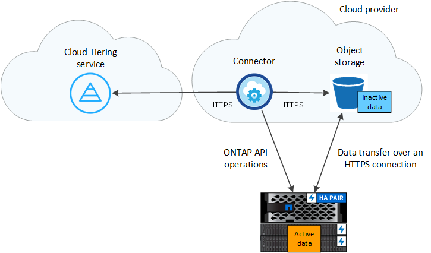

ドキュメントの変更をリクエスト
ドキュメントの変更をリクエスト GitHub で編集
GitHub で編集 寄稿者向けガイド
寄稿者向けガイドCloud Tiering の詳細をご確認ください
ネットアップの Cloud Tiering Service は、アクセス頻度の低いデータをオンプレミスの ONTAP クラスタからオブジェクトストレージに自動的に階層化することで、データセンターをクラウドへと拡張します。これにより、クラスタの貴重なスペースが解放され、アプリケーションレイヤに変更を加えることなく、より多くのワークロードに対応できるようになります。Cloud Tiering を使用すると、データセンターのコストを削減し、 CAPEX モデルから OPEX モデルに切り替えることができます。
Cloud Tiering サービスには、 FabricPool の機能が活用されています。FabricPool はネットアップデータファブリックのテクノロジで、低コストのオブジェクトストレージへデータを自動で階層化することができます。アクティブな（ホットな）データはローカル階層（オンプレミスの ONTAP アグリゲート）に残り、アクセス頻度の低い（コールド）データはクラウド階層に移動されます。移動されると、 ONTAP のデータ効率は維持されます。
-
注： ONTAP 9.8 以降では、高性能 SSD に加え、 HDD で構成されたアグリゲートからデータを階層化できます。それよりも前のリリースでは、オール SSD アグリゲートを使用する AFF システムまたは FAS システムからのみデータを階層化できます。を参照してください "FabricPool を使用するための要件" を参照してください。
の機能
Cloud Tiering は、自動化、監視、レポート、共通の管理インターフェイスを提供します。
-
自動化により、データのセットアップと管理が容易になります オンプレミスの ONTAP クラスタからクラウドへの階層化
-
デフォルトのクラウドプロバイダのストレージクラス / アクセス階層を選択するか、ライフサイクル管理を使用して古い階層化データを対費用効果の高い階層に移動できます
-
単一のコンソールで、個別に行う必要がありません 複数のクラスタにわたって FabricPool を管理
-
レポートには、アクティブなデータと非アクティブなデータの量が表示されます 各クラスタ
-
階層化の健常性ステータスを確認することで、問題を特定して修正できます そのような状況が発生したとき
-
Cloud Volumes ONTAP システムを使用している場合は、クラスタダッシュボードにこれらのシステムが表示されるので、ハイブリッドクラウドインフラにおけるデータの階層化を完全に把握できます
Cloud Tiering が提供する価値の詳細については、 "NetApp Cloud Central の Cloud Tiering ページを確認してください"。

|
Cloud Volumes ONTAP システムは、 Cloud Tiering から読み取り専用です。 "Cloud Volumes ONTAP の階層化はで設定します Cloud Manager の作業環境"。 |
サポートされているオブジェクトストレージプロバイダ
オンプレミスの ONTAP クラスタから次のオブジェクトストレージプロバイダにアクセス頻度の低いデータを階層化できます。
-
Amazon S3
-
Microsoft Azure Blob
-
Google クラウドストレージ
-
S3 互換オブジェクトストレージ
-
NetApp StorageGRID

|
NAS ボリュームからパブリッククラウドまたは StorageGRID などのプライベートクラウドにデータを階層化できます。SAN プロトコルがアクセスするデータを階層化する場合は、接続に関する考慮事項に基づいてプライベートクラウドを使用することを推奨します。 |
オブジェクトストレージ階層
各 ONTAP クラスタは、アクセス頻度の低いデータを 1 つのオブジェクトストアに階層化します。データの階層化を設定するときに、新しいバケット / コンテナを追加するか、ストレージクラスまたはアクセス階層とともに既存のバケット / コンテナを選択するかを選択できます。
Cloud Tiering は、アクセス頻度の低いデータにクラウドプロバイダのデフォルトのストレージクラス / アクセス階層を使用します。ただし、ライフサイクルルールを適用することで、一定の日数が経過した時点でデータがデフォルトのストレージクラスから別のストレージクラスに自動的に移行されるようにすることができます。これにより、コールドデータを低コストのストレージに移動することで、コストを削減できます。
|
|
StorageGRID または S3 互換のストレージに階層化されたデータのライフサイクルルールは選択できません。 |
価格とライセンス
従量課金制のサブスクリプション、お客様所有の Cloud Tiering ライセンス、またはその両方を組み合わせて使用した Cloud Tiering 。ライセンスがない場合は、最初のクラスタで 30 日間の無償トライアルを利用できます。
データを StorageGRID に階層化する場合、料金は発生しません。BYOL ライセンスでも PAYGO 登録も必要ありません。
30 日間の無償トライアルをご利用いただけます
Cloud Tiering ライセンスがない場合は、最初のクラスタへの階層化を設定すると、 Cloud Tiering の 30 日間の無償トライアルが開始されます。30 日間の無償トライアルの終了後は、従量課金制サブスクリプション、 BYOL ライセンス、またはその両方を組み合わせて Cloud Tiering を購入する必要があります。
無償トライアルが終了し、ライセンスの登録や追加を行っていない場合、 ONTAP はオブジェクトストレージにコールドデータを階層化しなくなりますが、既存のデータには引き続きアクセスできます。
従量課金制のサブスクリプション
Cloud Tiering は、従量課金制モデルで使用量ベースのライセンスを提供します。クラウドプロバイダの市場に登録すると、階層化されたデータに対して GB 単位の料金が発生します。前払い料金は発生しません。クラウドプロバイダから月額料金で請求されます。
無償トライアルを利用されている場合や、お客様が独自のライセンスを使用（ BYOL ）されている場合も、サブスクリプションを設定する必要があります。
-
登録すると、無料トライアルの終了後にサービスが中断されることがなくなります。
試用期間が終了すると、階層化したデータの量に応じて 1 時間ごとに課金されます。
-
BYOL ライセンスで許可されている数を超えるデータを階層化した場合、従量課金制サブスクリプションでデータの階層化が続行されます。
たとえば、 10TB のライセンスがある場合、 10TB を超える容量はすべて従量課金制サブスクリプションで課金されます。
無償トライアル期間中、または Cloud Tiering BYOL ライセンスを超えていない場合、従量課金制サブスクリプションからは課金されません。
お客様所有のライセンスを使用
ネットアップから Cloud Tiering * ライセンスを購入して、お客様所有のライセンスを有効にしてください。2 カ月、 12 カ月、 24 カ月、 36 カ月の期間ライセンスを購入し、任意の階層化容量を指定できます。BYOL クラウド階層化ライセンスは、複数のオンプレミス ONTAP クラスタで使用できるフローティングライセンスです。クラウド階層化ライセンスで定義した合計階層化容量は、すべてのオンプレミスクラスタで使用できます。
Cloud Tiering ライセンスを購入したら、 Cloud Manager のデジタルウォレットページを使用してライセンスを追加する必要があります。 "Cloud Tiering BYOL ライセンスの使用方法を参照してください"。
前述したように、 BYOL ライセンスを購入した場合でも、従量課金制のサブスクリプションを設定することを推奨します。
|
|
2021 年 8 月以降、古い * FabricPool * ライセンスが * Cloud Tiering * ライセンスに置き換えられました。 "Cloud Tiering ライセンスと FabricPool ライセンスの違いについては、こちらをご覧ください"。 |
Cloud Tiering の仕組み
クラウド階層化とは、 FabricPool テクノロジを使用して、オンプレミスの ONTAP クラスタからパブリッククラウドまたはプライベートクラウドのオブジェクトストレージに、アクセス頻度の低いコールドデータを自動的に階層化するネットアップマネージドサービスです。ONTAP への接続はコネクタから行われます。
次の図は、各コンポーネント間の関係を示しています。

Cloud Tiering の仕組みは次のとおりです。
-
オンプレミスクラスタは、 Cloud Manager から検出できます。
-
階層化を設定するには、バケット / コンテナ、ストレージクラスまたはアクセス階層、階層化データのライフサイクルルールなど、オブジェクトストレージに関する詳細を指定します。
-
Cloud Manager は、オブジェクトストレージプロバイダを使用するように ONTAP を設定し、クラスタ上のアクティブなデータと非アクティブデータの量を検出します。
-
階層化するボリュームとそれらのボリュームに適用する階層化ポリシーを選択します。
-
ONTAP は、アクセス頻度の低いデータをオブジェクトストアに階層化します。アクセス頻度の低いデータとして扱われるしきい値に達するとすぐにアクセスを開始します（を参照） [Volume tiering policies]）。
-
階層化されたデータ（一部のプロバイダのみが使用可能）にライフサイクルルールを適用した場合、古い階層化データは、一定の日数が経過すると、よりコスト効率の高い階層に移動されます。
ボリューム階層化ポリシー
階層化するボリュームを選択する場合は、各ボリュームに適用するボリューム階層化ポリシーを選択します。階層化ポリシーは、ボリュームのユーザデータブロックをクラウドに移動するタイミングと、移動するかどうかを決定します。
冷却期間 * を調整することもできます。ボリューム内のユーザデータが「コールド」とみなされてオブジェクトストレージに移動されるまでの日数です。階層化ポリシーでクーリング期間を調整できる場合、 ONTAP 9.8 以降では 2 ~ 183 日、 ONTAP の以前のバージョンでは 2 ~ 63 日の有効値を使用することを推奨します。ベストプラクティスは 2 ~ 63 です。
- ポリシーなし（なし）
-
パフォーマンス階層内のボリュームのデータを保持し、クラウド階層に移動されないようにします。
- コールドスナップショット（ Snapshot のみ）
-
ONTAP は、アクティブなファイルシステムと共有されていないボリューム内のコールドスナップショットブロックをオブジェクトストレージに階層化します。読み取られると、クラウド階層のコールドデータブロックはホットになり、パフォーマンス階層に移動します。
データが階層化されるのは、アグリゲートの容量が 50% に達し、データがクーリング期間に達した場合のみです。デフォルトのクーリング日数は 2 ですが、この数は調整できます。
再加熱されたデータは、スペースがある場合にのみパフォーマンス階層に書き戻されます。パフォーマンス階層の容量が 70% を超えている場合、ブロックはクラウド階層から引き続きアクセスされます。 - コールドユーザデータとスナップショット（自動）
-
ONTAP は、ボリューム内のすべてのコールドブロックをオブジェクトストレージに階層化します（メタデータは含まれません）。コールドデータには、 Snapshot コピーだけでなく、アクティブなファイルシステムのコールドユーザデータも含まれます。
ランダムリードで読み取られた場合、クラウド階層のコールドデータブロックはホットになり、パフォーマンス階層に移動されます。インデックススキャンやウィルス対策スキャンに関連するようなシーケンシャルリードで読み取られた場合、クラウド階層のコールドデータブロックはコールドのままで、パフォーマンス階層には書き込まれません。このポリシーは ONTAP 9.4 以降で使用できます。
データが階層化されるのは、アグリゲートの容量が 50% に達し、データがクーリング期間に達した場合のみです。デフォルトのクーリング日数は 31 日ですが、この数は調整できます。
再加熱されたデータは、スペースがある場合にのみパフォーマンス階層に書き戻されます。パフォーマンス階層の容量が 70% を超えている場合、ブロックはクラウド階層から引き続きアクセスされます。 - すべてのユーザデータ（すべて）
-
すべてのデータ（メタデータを除く）はすぐにコールドとしてマークされ、オブジェクトストレージにできるだけ早く階層化されます。ボリューム内の新しいブロックがコールドになるまで、 48 時間待つ必要はありません。「すべて」のポリシーが設定される前のボリュームにあるブロックは、コールドになるまで 48 時間かかります。
読み取られた場合、クラウド階層のコールドデータブロックはコールドのままで、パフォーマンス階層に書き戻されません。このポリシーは ONTAP 9.6 以降で使用できます。
この階層化ポリシーを選択する前に、次の点を考慮してください。
-
データを階層化することで、ストレージ効率が即座に低下します（インラインのみ）。
-
このポリシーは、ボリュームのコールドデータが変更されないことに確信がある場合にのみ使用してください。
-
オブジェクトストレージがトランザクションではないため、変更されるとフラグメント化の効果が大きくなります。
-
データ保護関係のソースボリュームに「すべて」の階層化ポリシーを割り当てる前に、 SnapMirror 転送の影響を考慮してください。
データはすぐに階層化されるため、 SnapMirror はパフォーマンス階層ではなくクラウド階層からデータを読み取ります。そのため、 SnapMirror 処理が遅くなります。別の階層化ポリシーを使用している場合でも、 SnapMirror 処理の速度が遅くなる可能性があります。
-
Cloud Backup も、階層化ポリシーが設定されたボリュームに同様の影響を受けます。 "階層化ポリシーに関する考慮事項については、「 Cloud Backup の使用」を参照"。
-
- すべての DP ユーザデータ（バックアップ）
-
データ保護ボリューム上のすべてのデータ（メタデータを除く）は、すぐにクラウド階層に移動されます。読み取られた場合、クラウド階層のコールドデータブロックはコールドのままで、パフォーマンス階層に書き戻されません（ ONTAP 9.4 以降）。
このポリシーは ONTAP 9.5 以前で使用できます。ONTAP 9.6 以降では、「すべて * 」の階層化ポリシーに置き換えられています。